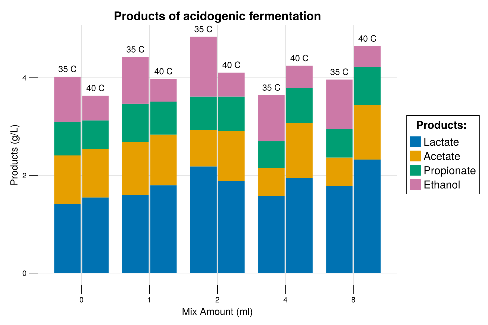
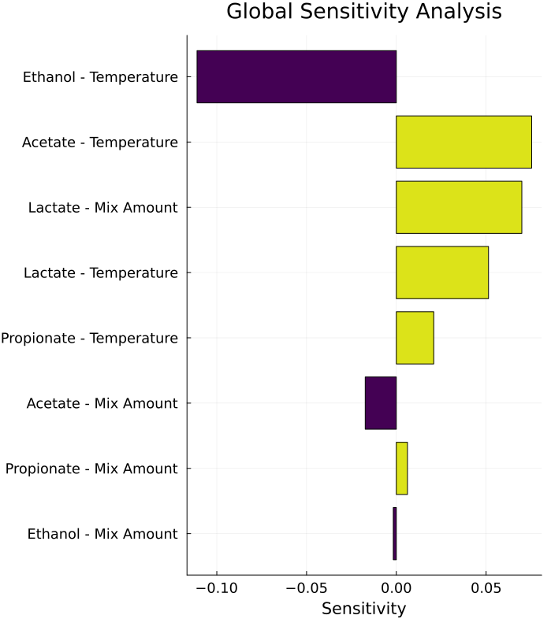
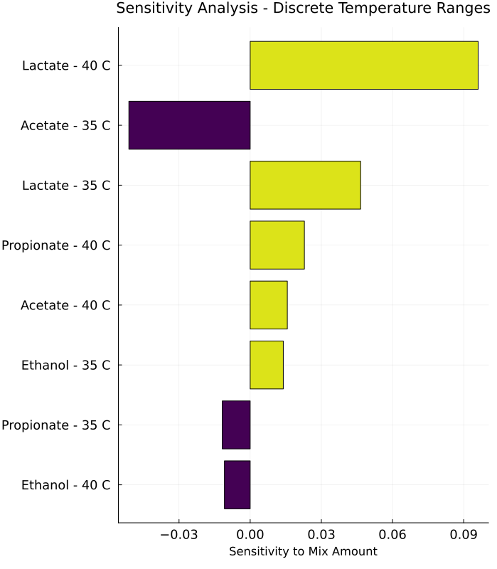
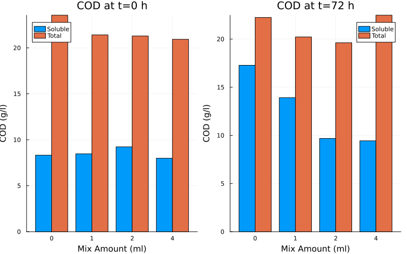
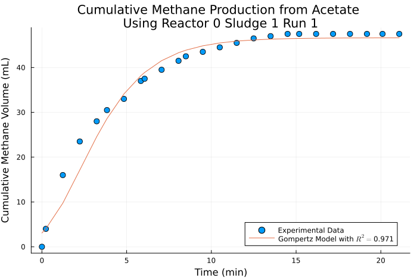
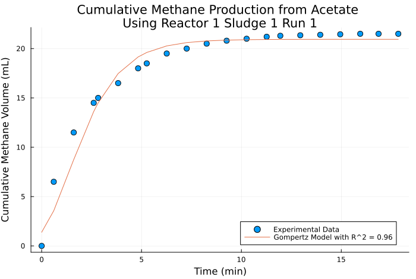

Progress Report για την Αναερόβια Χώνευση Υδρολυμένων Υπολειμμάτων Τροφών
Βιδιάνος Γιαννίτσης
1. Περιεχόμενα
- 1. Περιεχόμενα
- 2. Θέμα
- 3. Παράγοντες που επηρεάζουν την διεργασία υδρόλυσης
- 4. Επιλογή επιπέδων για τον σχεδιασμό πειραμάτων
- 5. Αποτελέσματα από τα πειράματα υδρόλυσης
- 6. Συμπεράσματα
- 7. Προετοιμασία υποστρώματος για χώνευση
- 8. Αναερόβια Χώνευση
- 9. Αποτελέσματα κύκλου με οξικό οξύ
- 10. Αποτελέσματα πρώτου κύκλου με υδρολύματα
- 11. Αποτελέσματα δεύτερου κύκλου με υδρολύματα
- 12. Συγκριτικά αποτελέσματα πρώτου κύκλου αναερόβιας χώνευσης
- 13. Επόμενα πειράματα
2. Θέμα
Το θέμα της διπλωματικής είναι η επεξεργασία υπολειμμάτων τροφών με αναερόβια χώνευση. Πριν την χώνευση γίνεται μία διεργασία υδρόλυσης με ένα εμπορικό σκεύασμα που περιέχει ένζυμα και μικροοργανισμούς (παρακάτω αναφέρεται ως "μιξ" χάριν ευκολίας) το οποίο διαλυτοποιεί την οργανική ύλη του FW αλλά ταυτόχρονα κάνει και μία οξεογενή ζύμωση, το οποίο είναι επιθυμητό καθώς κάνει την οργανική ύλη ποιό εύκολα προσβάσιμη προς τους μεθανογόνους.
3. Παράγοντες που επηρεάζουν την διεργασία υδρόλυσης
3.1. Βασικότεροι Παράγοντες
Η διεργασία της ταυτόχρονης υδρόλυσης και ζύμωσης επηρεάζεται από πολλούς παράγοντες.
Προφανώς θέλουμε να εξετάσουμε διάφορες ποσότητες του μιξ ενζύμων και μικροοργανισμών για να δούμε πως επιδρά στην διεργασία.
Ακόμη, καθώς μιλάμε για μικροβιακή διεργασία, η θερμοκρασία και το pH είναι δύο από τις βασικότερες λειτουργικές παραμέτρους. Λόγω περιορισμών στην αυτόματη ρύθμιση του pH, αυτό δεν ρυθμίστηκε και αφέθηκε στην αρχική τιμή του (περίπου 4.2-4.3). Η θερμοκρασία ρυθμίστηκε με θερμόλουτρο και δοκιμάστηκαν διάφορες τιμές.
3.2. Άλλοι σημαντικοί παράγοντες
Επίσης σημαντικό για μία μικροβιακή διεργασία είναι ο αερισμός, ο οποίος μπορεί να καθορίσει το μεταβολικό μονοπάτι που θα ακολουθηθεί. Δεν έγινε αερισμός του συστήματος, αλλά ούτε κάποια προσπάθεια αυτό να είναι αναερόβιο. Ως αποτέλεσμα, υπήρχαν μάλλον κάποιες αερόβιες φάσεις (όταν ανοίγαμε το καπάκι), αλλά το σύστημα λειτουργούσε κυρίως αναερόβια.
Άλλες παραμέτροι που παίζουν ρόλο είναι η αραίωση του αρχικού δείγματος (όσο περισσότερο αραιωθεί τόσο περισσότερη θα είναι η υγρή φάση, το οποίο οδηγεί σε καλύτερη ομοιογένεια) και η ανάδευση (θέλουμε αρκετή ανάδευση ώστε να πετύχουμε την ομοιγένεια). Αυτές δεν ρυθμίστηκαν αλλά επιλέχθηκαν μετά από κάποια προπαρασκευαστικά πειράματα στις τιμές αραίωση 1:3 (FW:Νερό) και ανάδευση 120 rpm.
4. Επιλογή επιπέδων για τον σχεδιασμό πειραμάτων
Έτσι, ο πειραματικός σχεδιασμός που έγινε βασίστηκε σε 2 βασικές μεταβλητές, την θερμοκρασία και την ποσότητα του μιξ. Οι βασικές θερμοκρασίες που δοκιμάστηκαν ήταν οι 35 και 40 C, ενώ έγινε και ένα προπαρασκευαστικό πείραμα στους 45 ως δοκιμή, το οποίο δεν είχε πολύ καλή απόδοση. Οι θερμοκρασίες αυτές επιλέχθηκαν ως αντιπροσωπευτικές τιμές της μεσόφιλης περιοχής.
Για την ποσότητα του μιξ, υπήρχε η δυνατότητα δοκιμής πολλών τιμών. Οπότε, έγιναν πειράματα σε τιμές 0, 1, 2, 4 και 8 ml. Το 0 έγινε ως blank για να δούμε τι γίνεται αν δεν προσθέσουμε τίποτα. Τα 1 και 2 ml δοκιμάστηκαν ως μικρές τιμές για να δούμε πόση αλλαγή μπορούν να προκαλέσουν, ενώ οι τιμές 4 και 8 επιλέχθηκαν ως υψηλότερες για να δούμε αν μετά από κάποιο σημείο η προσθήκη περισσότερων ενζύμων και μικροοργανισμών δεν συνεισφέρει άλλο στην διεργασία.
5. Αποτελέσματα από τα πειράματα υδρόλυσης
5.1. Κατανομή Προιόντων
Ένα από τα βασικά κριτήρια για να κρίνουμε την διεργασία είναι τα παραγόμενα προιόντα (είτε ως σύνολο ή ξεχωριστά για το κάθε προιόν).

5.2. Συγκεντρωτικά Κριτήρια
Πολύ συχνά, αντί να ασχοληθούμε όμως με την κατανομή των προιόντων, κοιτάμε το σύνολο τους. Δύο συγκεντρωτικά κριτήρια για να κρίνουμε την διεργασία είναι το acidification rate το οποίο δείχνει πόσο από το διαλυτό COD οφείλεται σε προιόντα οξεογένεσης, καθώς και το yield σακχάρων σε προιόντα που δείχνει πόσα από τα αρχικά σάκχαρα μετατράπηκαν σε προιόντα οξεογένεσης.

5.3. Ανάλυση Ευαισθησίας
Ως ένα τελευταίο αποτέλεσμα, παρουσιάζεται μία ανάλυση ευαισθησίας σε όλο το πεδίο παραμέτρων που μελετήθηκε (θερμοκρασία 35-40 C, mix amount 0-8 ml).

Από αυτήν βλέπουμε πως η αύξηση της θερμοκρασίας βοηθάει στην παραγωγή τριών από τα 4 προιόντα, οπότε, αν δεν μας ενδιαφέρει πολύ η αιθανόλη, η υψηλή θερμοκρασία (40 \( ^oC \)) είναι η πιο επιθυμητή.
Μάλιστα, αν περιορίσουμε την ευαισθησία ώστε να είναι καθαρά στην ποσότητα μιξ ανά θερμοκρασία, βλέπουμε ότι στους 35 \( ^oC \), το οξικό έχει μία μεγάλη τάση μείωσης όσο προσθέτουμε το μιξ. Αυτός είναι άλλος ένας λόγος να πάμε στους 40 \( ^oC \). Επίσης φαίνεται πως εκεί, τα τρία προιόντα που θα παραχθούν έχουν θετική ευαισθησία προς την ποσότητα μιξ.

Όμως, αν περιορίσουμε τις ποσότητες μιξ στα 2-8 ml, βλέπουμε πως αυτή η θετική ευαισθησία έχει πρακτικά χαθεί, οπότε πιθανότατα δεν έχει νόημα να πάμε πάνω από 2 ml.
6. Συμπεράσματα
Παρότι τα συμπεράσματα δεν είναι ξεκάθαρα (ανάλογα με τον τρόπο εξέτασης των αποτελεσμάτων βγαίνουν διαφορετικά συμπεράσματα), η γενική κατάληξη είναι πως η θερμοκρασία 40 \( ^oC \) είναι καλύτερη και ότι οι πολύ υψηλές ποσότητες μιξ είναι πολύ πιθανό να μην βοηθάνε την διεργασία. Οπότε για την χώνευση προετοιμάστηκε υπόστρωμα από υδρόλυση στους 40 \( ^oC \) με ποσότητες μιξ 0, 1, 2 και 4 ml.
7. Προετοιμασία υποστρώματος για χώνευση
Για να τρέξουμε την αναερόβια χώνευση, προετοιμάσαμε καινούργια υδρολύματα καθώς τα προηγούμενα δεν είχαν αποθηκευτεί. Σε αυτά έχουν μετρηθεί TS, VS, sCOD και tCOD.


8. Αναερόβια Χώνευση
8.1. Πειραματική Διάταξη
8.2. Πειραματική Διαδικασία
Στον πρώτο κύκλο πειραμάτων, προσθέσαμε 125 g λάσπης (1.55 g VS) και 315 g νερό με σκοπό μόλις προστεθεί το υδρόλυμα ο αντιδραστήρας να έχει πληρωθεί. Όλες οι τροφοδοσίες έγιναν με 100 mg sCOD-eq. Αρχικά, έγινε τροφοδοσία με οξικό, το οποίο ενεργοποιεί την λάσπη και μας δείχνει την μέγιστη δυνατή παραγωγή μεθανίου που μπορούμε να περιμένουμε από την λάσπη αυτή. Έπειτα, τροφοδοτήσαμε με τα υδρολύματα για να δούμε πόσο μεθάνιο θα παράγουν αυτά.
8.3. Χαρακτηριστικά λάσπης
| Χαρακτηριστικό | Τιμή |
|---|---|
| TS (g/l) | 46.28 |
| VS (g/l) | 12.36 |
| VS/TS | 0.267 |
| pH | 8.33 |
| Αλκαλικότητα (mg CaCO3/L) | 12250 |
8.4. Μοντέλο Gompertz για κινητική ανάλυση
Καθώς έχουμε την δυνατότητα του 24ωρου monitoring της διεργασίας, μπορεί πολύ εύκολα να γίνει κινητική ανάλυση της χώνευσης. Ένα από τα καλύτερα μοντέλα για κινητική ανάλυση αναερόβιας χώνευσης στη βιβλιογραφία είναι το τροποποιημένο μοντέλο Gompertz. Η προσαρμογή στο μοντέλο μπορεί να γίνει είτε με τον όγκο μεθανίου ή διαιρώντας τον με κάποιο μέγεθος για σύγκριση με άλλες μελέτες. Συνήθως χρησιμοποιείται είτε όγκος μεθανίου ανά g VS λάσπης ή όγκος μεθανίου ανά g COD που καταναλώνεται.
\[ P(t) = P_{\max } \exp \left( - \exp \left[ \frac{R_{\max }e (λ-t)}{P_{\max }} + 1 \right] \right) \]
9. Αποτελέσματα κύκλου με οξικό οξύ
9.1. Δείγματα 0, 1


9.2. Δείγματα 2, 4


9.3. Δείγμα FW

10. Αποτελέσματα πρώτου κύκλου με υδρολύματα
Δεν θα αναφερθούν πολύ αναλυτικά αποτελέσματα για τον κύκλο αυτόν λόγω των προβλημάτων που είχε. Οπότε, κάποιες τάσεις που φαίνονται εδώ πιθανόν να είναι σωστές, αλλά δεν είναι έμπιστο πείραμα και για αυτό έγινε και μία επανάληψη.


10.1. Untreated FW
Ένα από αυτά τα δείγματα (αυτό που τροφοδοτήθηκε με ακατέργαστο FW) δεν παρουσίασε αυτό το φαινόμενο και παρήγαγε πάρα πολύ λίγο μεθάνιο. Υποτέθηκε ότι μπορεί να υπήρξε κάποια διαρροή στο δείγμα αυτό.

11. Αποτελέσματα δεύτερου κύκλου με υδρολύματα
11.1. Δείγματα 0, 1


11.2. Δείγματα 2, 4


11.3. Untreated FW
Με την επανάληψη αυτή βλέπουμε πως παρόλο που τα υπόλοιπα δείγματα διαφέρουν στις δύο επαναλήψεις (και φαίνεται πως το δεύτερο αυτό run έχει πιο λογικά αποτελέσματα), το δείγμα που τροφοδοτήθηκε με ανεπεξέργαστο FW παρήγαγε πολύ μικρή ποσότητα μεθανίου και στις 2 περιπτώσεις.

Μετά την λήξη του κύκλου, πείραμε δείγματα από το κάθε δοχείο για αναλύσεις. Στην περίπτωση του δείγματος αυτού, το pH είχε πέσει στο 4.22. Τέτοιο pH σε αναερόβια χώνευση παρατηρείται μόνο όταν η χώνευση έχει καταρρεύσει. Συμπερασματικά, η χώνευση ανεπεξεργαστού FW είναι ασταθείς και μπορεί να οδηγήσει σε κατάρρευση, το οποίο δείχνει και την χρησιμότητα της προεπεξεργασίας που κάναμε.
12. Συγκριτικά αποτελέσματα πρώτου κύκλου αναερόβιας χώνευσης
12.1. Βιοχημικό Δυναμικό Μεθανίου (BMP)

Βλέπουμε πως το περισσότερο μεθάνιο έχει παραχθεί από το υδρόλυμα με 1 ml μιξ και το δεύτερο καλύτερο είναι αυτό με τα 2 ml. Επίσης, το 0 ml έχει την χειρότερη απόδοση, το οποίο δείχνει πως αν η ζύμωση γίνει χωρίς την προσθήκη του μιξ είναι πολύ λιγότερο αποδοτική. Με βάση τα αποτελέσματα της υδρόλυσης, θα περιμέναμε το 2 (ή ακόμη και το 4) να έχουν την καλύτερη απόδοση. Βέβαια, στην επανάληψη αυτή, το 1 είχε πολύ υψηλό διαλυτό COD, το οποίο μπορεί να εκφράζει ότι έγινε καλύτερη διαλυτοποίηση στο πείραμα αυτό. Το θέμα αυτό πιθανόν να διερευνηθεί περαιτέρω με HPLC.
12.2. Ρυθμός Παραγωγής Μεθανίου
Οι ρυθμοί είναι εκφρασμένοι σε \( \frac{\text{ml CH$_4$}}{\text{hour}} \).
| SampleName | Acetate | Hydrolysate | Ratio |
|---|---|---|---|
| Sample 0 | 459.84 | 0.043 | 0.0094 |
| Sample 1 | 326.88 | 0.108 | 0.033 |
| Sample 2 | 374.04 | 0.114 | 0.0305 |
| Sample 4 | 579.0 | 0.08 | 0.0138 |
| Sample FW | 294.06 | 0.054 | 0.0184 |
Ακολουθείται η ίδια τάση με το BMP ως προς τα δύο καλύτερα, αλλά το FW είχε και αυτό σχετικά γρήγορο ρυθμό.
12.3. Ειδική Μεθανογόνος Δραστικότητα της λάσπης (SMA)
Ακόμη ένα χρήσιμο μέγεθος για την αξιολόγηση της χώνευσης. Έχει μονάδες \( \frac{\text{ml CH$_4$}}{\text{day} \cdot \text{g VS}} \) και αποτελεί τον λόγο του μέγιστου ειδικού ρυθμού ανάπτυξης με τα VS λάσπης που έχουμε τροφοδοτήσει. Χρησιμοποιείται κυρίως ως μέτρο της ενεργότητας της λάσπης, όμως επηρεάζεται και από την τροφοδοσία.
| SampleName | Acetate | Hydrolysate | Ratio |
|---|---|---|---|
| Sample 0 | 7119.36 | 0.672 | 0.0094 |
| Sample 1 | 5061.6 | 1.728 | 0.0341 |
| Sample 2 | 5676.48 | 1.776 | 0.0313 |
| Sample 4 | 8965.44 | 1.224 | 0.0137 |
| Sample FW | 4554.72 | 0.84 | 0.0184 |
13. Επόμενα πειράματα
Πειραματικός κύκλος με το 2ο δείγμα λάσπης για να δούμε αν θα έχει την ίδια τάση.
HPLC νέου υδρολύματος κυρίως για να δούμε γιατί το 1 ml έχει πάει τόσο καλά (είτε πολύ υψηλές αρχικές συγκεντρώσεις ή κάτι άλλαξε)?
Χώνευση με υδρόλυμα Orca?